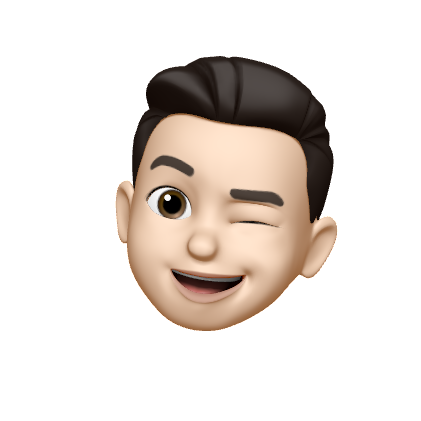
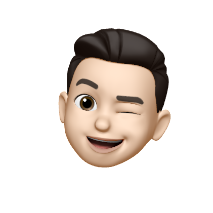

Hey there 👋🏼 I’m an engineering intern at FreeAgent, a
computer science undergraduate at the
University of Birmingham,
and an amateur photographer.
I've been interested in computers, technology, programming — and the impact of all those things on humans and
society since a young age.
I believe that computers should just 'fit in' and enable us to do great things
that otherwise wouldn't be possible or easy.
I am currently particularly interested in our relationship with social media from an HCI
perspective — and whether we can create a healthier one.
Photography is a growing passion of mine.
I am a big fan of simple compositions and bold colours.
I love taking landscapes, candid photographs at events, and natural looking
portraits.
If you are interested in my work as a photographer, please look at my gallery and send me an
email.
Strengthfinder Top 5
- Restorative
- Harmony
- Relator
- Responsibility
- Intellection
George is a conscientious and ambitious computer science student at the
University of Birmingham.
As a software engineer, his interests lie within the intersection of technology
and the liberal arts. I.e. George is interested in how humans and computers
interact (the field of HCI),
and the implications of those interactions on society as a whole.
He also has a passion for photography — again ultimately focussing on the human side
of this art.

 
